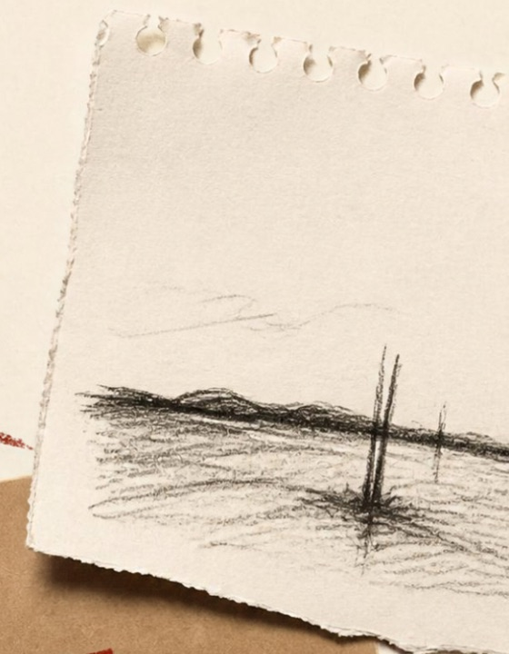
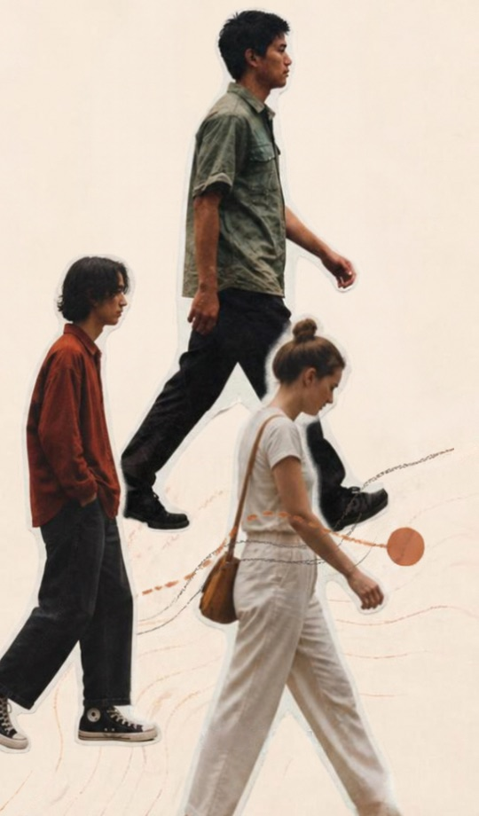
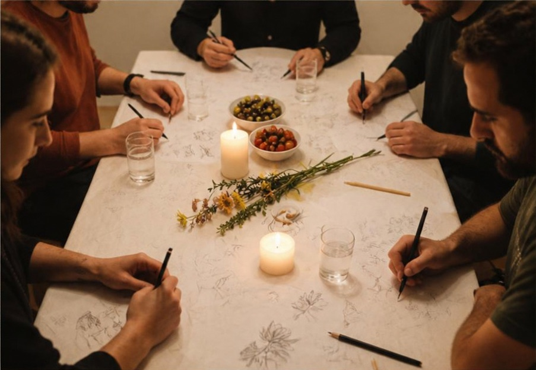
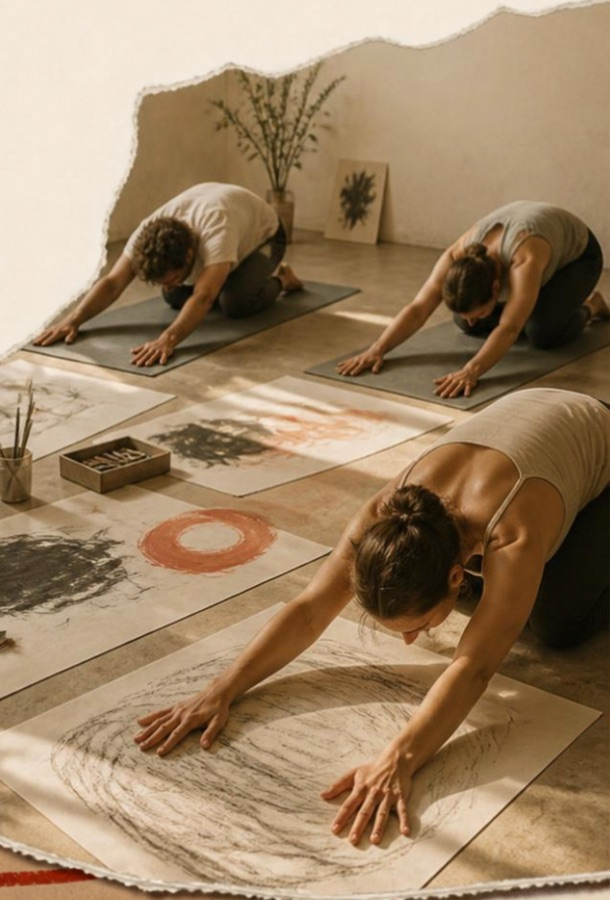

Arte, movimento e conversas com tempo. Diferentes formas de abrandar, voltar a ligar-te e explorar a forma como nos vivemos a nós próprios, uns aos outros e ao mundo que criamos.
Para pessoas individuais, pequenos grupos e encontros, em Lisboa, no Porto e online. Não é preciso jeito para a arte. Só curiosidade.

01
InnerSessions
Criar espaço para refletir.
Uma sessão individual com criação artística, propostas e conversa para explorar o que está a mudar na tua vida. Para momentos em que algo está a mudar e precisas de um sítio onde o pousar, ou de um novo sentido de direção.
1:1 · 60/90 min · Presencial em Lisboa ou no Porto, ou online

02
InnerWalks
Uma caminhada diferente.
Uma caminhada lenta e guiada, em que paramos para olhar com atenção e desenhar o que notamos. Deixa que os teus pensamentos te alcancem.
1:1 ou pequenos grupos (até 8) · 2 horas · Lisboa ou Porto

03
InnerTables
Abrir espaço para a conversa.
Um serão intimista de comida, desenho e das perguntas que normalmente não temos oportunidade de fazer. A mesa como espaço de curiosidade.
Grupos de 6–10 · Até 3 horas · Lisboa ou Porto

04
InnerReset
Mover. Respirar. Criar. Escutar.
O yoga e a respiração fluem para o desenho e a pintura. O corpo conduz, a criatividade segue. Terminamos com taças tibetanas e silêncio: deitas-te, escutas e deixas as coisas assentar. Não é mais uma aula de yoga.
Pequenos grupos ou 1:1 · 2 horas · Lisboa ou Porto
As datas e os horários variam. Envia uma mensagem sobre a Experiência que te desperta curiosidade, e partilhamos o que vem aí ou encontramos um momento que te sirva.
“This was, by far the best walk I’ve been to in a LONG time. Great to walk and see the beach and water. People were awesome and inclusive and time flew by. Thanks to the hosts for supporting this kind of fun.”
Participante InnerWalks
“It’s my second time going to the walk and I really love the vibe, people, locations and conversations that we have”
Participante InnerWalks, pela segunda vez
“Filipa es una gran anfitriona y siempre nos hace sentirnos bien a los que asistimos a sus actividades.”